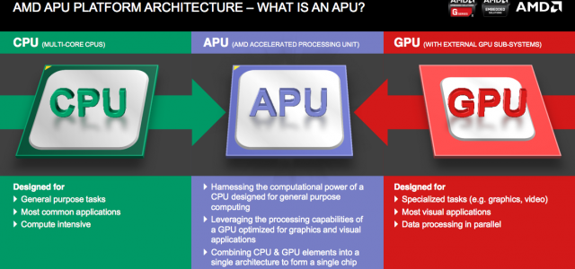
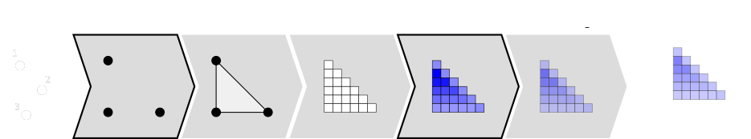

Introduction to Computer Graphics
mjsolidarios@wvsu.edu.ph | https://github.com/mjsolidariosUse the navigation buttons or the arrow keys to proceed to the remaining slides.
F
You can also press > >F < < on your keyboard to show your presentation in fullscreen mode.
This presentation is best explored with up-to-date web browsers.
What is Computer Graphics?
Computer graphics is the creation or manipulation of static and dynamic images on the computer.
System Diagram
Input Devices
- Keyboard
- Mouse
- Joystick
- Digitizer
- Voice Recognition
- Image Scanner
Processors - CPU, APU and GPU
Output Devices
- CRT - Cathode Ray Tube
- LCD - Liquid Crystal Display
- OLED - Organic LED
Raster vs Vector
Raster
Comes from a latin word 'rastrum' meaning rake. Electron draws the image every line forming a grid.
Vector
Directly manipulates the electron beam - forming an image.
Computer Graphics Driven
- Movie Industries
- Game Industries
- Medical Imaging and Scientific Visualizations
- Computer Aided Design
- User Interfaces
Graphics Libraries
- OpenGL
- Vulkan
- DirectX
- WebGL
OpenGL, short for "Open Graphics Library," is an application programming interface (API) designed for rendering 2D and 3D graphics. It provides a common set of commands that can be used to manage graphics in different applications and on multiple platforms.
Vulkan is a new generation graphics and compute API that provides high-efficiency, cross-platform access to modern GPUs used in a wide variety of devices from PCs and consoles to mobile phones and embedded platforms.
Microsoft DirectX is a collection of application programming interfaces for handling tasks related to multimedia, especially game programming and video, on Microsoft platforms.
WebGL enables web content to use an API based on OpenGL to perform 2D and 3D rendering in an HTML canvas in browsers that support it without the use of plug-ins.
Graphics Library Pipeline
Let us try OpenGL
import sys
import ctypes
import numpy as np
import OpenGL.GL as gl
import OpenGL.GLUT as glut
vertex_code = """
attribute vec2 position;
void main(){ gl_Position = vec4(position, 0.0, 1.0); } """
fragment_code = """
void main() { gl_FragColor = vec4(1.0, 0.0, 0.0, 1.0); } """
def display():
gl.glClear(gl.GL_COLOR_BUFFER_BIT)
gl.glDrawArrays(gl.GL_TRIANGLE_STRIP, 0, 4)
glut.glutSwapBuffers()
def reshape(width,height):
gl.glViewport(0, 0, width, height)
def keyboard( key, x, y ):
if key == b'\x1b':
sys.exit( )
# GLUT init
# --------------------------------------
glut.glutInit()
glut.glutInitDisplayMode(glut.GLUT_DOUBLE | glut.GLUT_RGBA)
glut.glutCreateWindow('Hello world!')
glut.glutReshapeWindow(512,512)
glut.glutReshapeFunc(reshape)
glut.glutDisplayFunc(display)
glut.glutKeyboardFunc(keyboard)
# Build data
# --------------------------------------
data = np.zeros(4, [("position", np.float32, 2)])
data['position'] = [(-1,+1), (+1,+1), (-1,-1), (+1,-1)]
# Build & activate program
# --------------------------------------
# Request a program and shader slots from GPU
program = gl.glCreateProgram()
vertex = gl.glCreateShader(gl.GL_VERTEX_SHADER)
fragment = gl.glCreateShader(gl.GL_FRAGMENT_SHADER)
# Set shaders source
gl.glShaderSource(vertex, vertex_code)
gl.glShaderSource(fragment, fragment_code)
# Compile shaders
gl.glCompileShader(vertex)
if not gl.glGetShaderiv(vertex, gl.GL_COMPILE_STATUS):
error = gl.glGetShaderInfoLog(vertex).decode()
print(error)
raise RuntimeError("Shader compilation error")
gl.glCompileShader(fragment)
gl.glCompileShader(fragment)
if not gl.glGetShaderiv(fragment, gl.GL_COMPILE_STATUS):
error = gl.glGetShaderInfoLog(fragment).decode()
print(error)
raise RuntimeError("Shader compilation error")
# Attach shader objects to the program
gl.glAttachShader(program, vertex)
gl.glAttachShader(program, fragment)
# Build program
gl.glLinkProgram(program)
if not gl.glGetProgramiv(program, gl.GL_LINK_STATUS):
print(gl.glGetProgramInfoLog(program))
raise RuntimeError('Linking error')
# Get rid of shaders (no more needed)
gl.glDetachShader(program, vertex)
gl.glDetachShader(program, fragment)
# Make program the default program
gl.glUseProgram(program)
# Build buffer
# --------------------------------------
# Request a buffer slot from GPU
buffer = gl.glGenBuffers(1)
# Make this buffer the default one
gl.glBindBuffer(gl.GL_ARRAY_BUFFER, buffer)
# Upload data
gl.glBufferData(gl.GL_ARRAY_BUFFER, data.nbytes, data, gl.GL_DYNAMIC_DRAW)
# Bind the position attribute
# --------------------------------------
stride = data.strides[0]
offset = ctypes.c_void_p(0)
loc = gl.glGetAttribLocation(program, "position")
gl.glEnableVertexAttribArray(loc)
gl.glBindBuffer(gl.GL_ARRAY_BUFFER, buffer)
gl.glVertexAttribPointer(loc, 2, gl.GL_FLOAT, False, stride, offset)
# Enter the mainloop
# --------------------------------------
glut.glutMainLoop()
The Easy Way
"Patience is now a skill"
Using glumpy
from glumpy import app, gloo, gl
vertex = """
attribute vec2 position;
void main(){ gl_Position = vec4(position, 0.0, 1.0); } """
fragment = """
void main() { gl_FragColor = vec4(1.0, 0.0, 0.0, 1.0); } """
# Create a window with a valid GL context
window = app.Window()
# Build the program and corresponding buffers (with 4 vertices)
quad = gloo.Program(vertex, fragment, count=4)
# Upload data into GPU
quad['position'] = (-1,+1), (+1,+1), (-1,-1), (+1,-1)
# Tell glumpy what needs to be done at each redraw
@window.event
def on_draw(dt):
window.clear()
quad.draw(gl.GL_TRIANGLE_STRIP)
# Run the app
app.run()
What do you think?
How's Graphics Programming with OpenGL?